概述
灵感来源
本创新设计的灵感来源老师在课堂教学时，常常使用PPT翻页器，但是我们发现，老师上课操作非常不方便，例如在按键时常会发生按错位置或找不到按键而需要认真确认，然后灵敏度也不是很准确，必须在一定的范围内操作，不能长距离离开翻页器接收装置，要是应用PPT指针选项的画笔就必须使用鼠标，操作非常不方便。
创作意图
现在市场上大量出现的产品如下图所示。可以通过按键来实现基本功能。
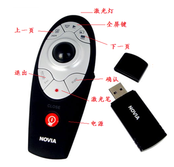
Laser pointer on the market now
第一次使用还得认真确认按键的位置，按起来也觉得不舒服。还有重要一点，因为需要按很多键实现功能，所以产品不可能做的很小。
主要用途
主要可以用于教学系统，同时可以适用于演讲者，需要手势控制PPT演示或者手势控制桌面操作系统的场合。再向更大方面拓展，可以用于各种多媒体演示系统。
经济价值及应用前景
经济价值上，本团队做成的实验模型除去人力成本价格基本控制在60~70元，若是大规模批量生产，价格可以降低至40元以下，价格对于消费人群来说会非常合理，并且愿意被消费者接受。
系统原理
硬件原理
单片机硬件部分，改进了原有单片机使其准确性和灵敏度得到提高。另外在其中增加了自动休眠和唤醒功能，同时可以自动进入休眠状态，功耗降低，提高其待机时长。
九轴陀螺仪
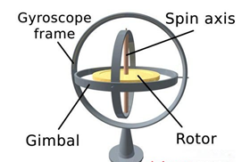
- 连单片机
- 用上位机监视模块与单片机的通信
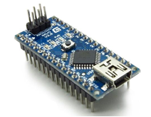
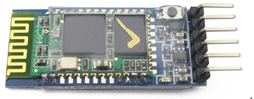
)
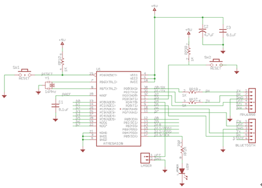
Win32系统把文件的概念进行了扩展。无论是文件、通信设备、命名管道、邮件槽、磁盘、还是控制台，都是用API函数CreateFile来打开或创建的。因此，只需通过CreateFile函数打开指定的串口即可获取串口的I/O流。
BOOL CSampleDlg:: PortOpen()
{
BOOL m_Opened;
m_Serial.SetCommPort(2);
m_Serial.SetSettings("4800,N,8,1");
m_Serial.SetInBufferSize(1024);
m_Serial.SetInBufferCount(0);
m_Serial.InputMode(1);
m_Serial.SetInputLen(0);
m_Opened=m_Serail.SetPortOpen(1);
return m_Opened;
}
多功能演示器在一定时间内没有对其进行操控时，则自动进入休眠状态，功耗降低，提高其待机时长。当在自动休眠状态下接收到活动指令时，则会自动退出休眠状态，开始进入工作状态.
void loop()
{ if(SleepOrNot==0)
{ decodedata();
SleepTiming2 = millis(); }
if(w[1]>1000&&SleepOrNot==0&&RightClick==1)
{ RightClick=0;
Bluetooth.print("rightoff\n");
w[1] = 0;
delay(500); }
if(SleepOrNot==0 && SleepTiming2-SleepTiming1 > 60000
&& RightClick == 0)//无按键按下时长判断
{ leepOrNot = 1;
digitalWrite(2, LOW); //MPU6050 Off
digitalWrite(13,LOW);
PowerOn = 0;
energy.PowerDown(); //go into Powerdown mode }
if(a[2]>0.40&&StartOrNot==0&&digitalRead(3)==LOW
&&SleepOrNot==0&&RightClick==0)//开始
{ delay(20);
if(digitalRead(3)==LOW)
{ Bluetooth.write("start\n");
a[2]=-1;
StartOrNot=1;
delay(500); } }
系统实现
整体实现思路
该项目主要是要研究如何通过远程手势捕捉装置上搭载的陀螺仪、加速度感应器等传感器来捕捉、识别操作者的手势动作，将捕捉到的数据通过蓝牙无线传输给PC，在PC端蓝牙接收，驱动程序通过串口读取蓝牙接收到的数据
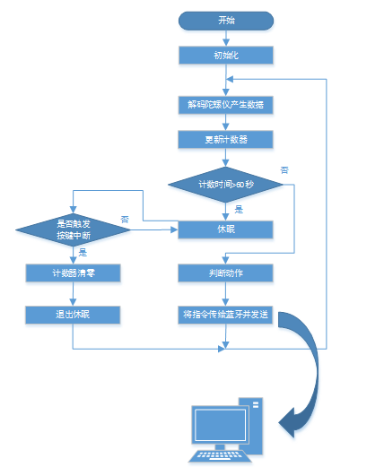
Single-chip microcomputer controlling
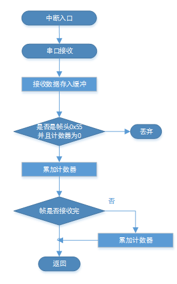
Single-chip microcomputer interrupt routine
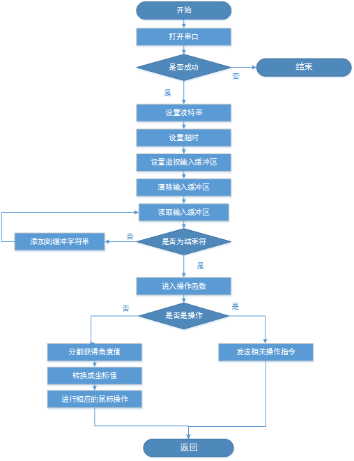
PC Controlling
产品特色
多功能手势演示装置只有一个按键——电源键。可以实现以下强大功能：
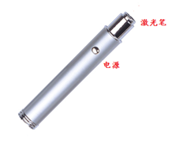
Multi-functional Multimedia Gesture Controlling
而且产品可升级，重要的是操作成功率接近100%。
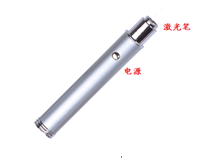
Current Product
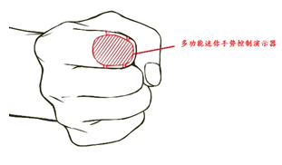
Mini Product with Up-gradation
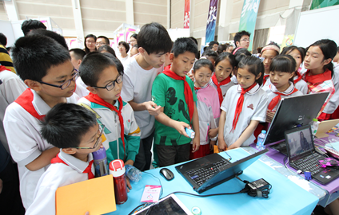
Exhibited at the Seventh Innovation Exhibition
Full screen-controlling with gesture
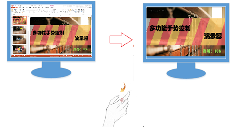
Last page-controlling with gesture
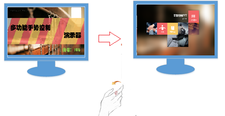
Next page-controlling with gesture
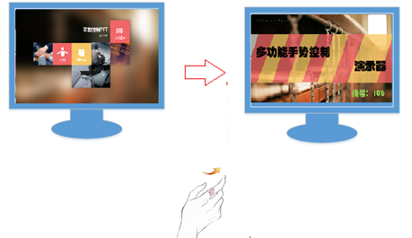
Lser pen using with gesture
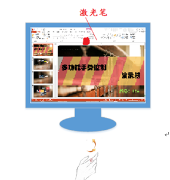
Air Mouse-controlling with gesture
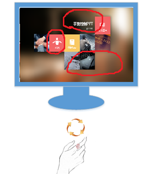
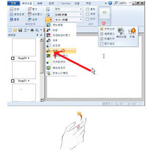
...updating
Feedback and Suggestions
Thanks for reading.